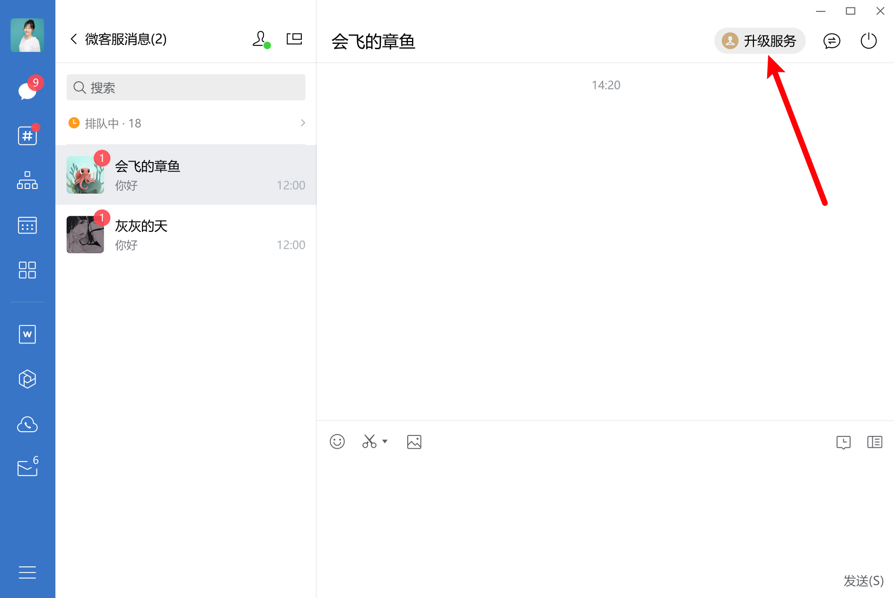

目录
当客户需要长期或多样的服务时，接待人员可发送专员名片或客户群二维码给客户，邀请客户升级服务 了解详情
企业需要在管理后台或移动端中的「微信客服」-「升级服务」中，配置专员和客户群。该接口提供获取配置的专员与客户群列表的能力。
请求方式: GET(HTTPS)
请求地址: https://qyapi.weixin.qq.com/cgi-bin/kf/customer/get_upgrade_service_config?access_token=ACCESS_TOKEN
参数说明：
| 参数 | 是否必须 | 说明 |
|---|---|---|
| access_token | 是 | 调用接口凭证 |
权限说明:
调用的应用需要满足如下的权限
| 应用类型 | 权限要求 |
|---|---|
| 自建应用 | 配置到「 微信客服- 可调用接口的应用」中 |
| 第三方应用 | 具有“微信客服->服务工具->配置「升级服务」”权限 |
| 代开发自建应用 | 具有“微信客服->服务工具->配置「升级服务」”权限 |
注： 从2023年12月1日0点起，不再支持通过系统应用secret调用接口，存量企业暂不受影响 查看详情
返回结果:
{ "errcode": 0, "errmsg": "ok", "member_range": { "userid_list": [ "zhangsan", "lisi" ], "department_id_list": [ 2, 3 ] }, "groupchat_range": { "chat_id_list": [ "wraaaaaaaaaaaaaaaa", "wrbbbbbbbbbbbbbbb" ] } }点击复制
参数说明:
| 参数 | 类型 | 说明 |
|---|---|---|
| errcode | int | 返回码 |
| errmsg | string | 错误码描述 |
| member_range | object | 专员服务配置范围 |
| member_range.userid_list | string | 专员userid列表 |
| member_range.department_list | unsigned int | 专员部门列表 |
| groupchat_range | object | 客户群配置范围 |
| groupchat_range.chat_id_list | string | 客户群列表 |
企业可通过其他接口获知客户的 external_userid 以及客户与接待人员的聊天内容，因此可以结合实际业务场景，为客户推荐指定的服务专员或客户群。
通过该 API 为客户指定专员或客户群后，接待人员可在企业微信中，见到特殊的状态提示（Windows 为 icon 样式变化，移动端为出现一条 bar ），便于接待人员知晓企业的指定动作。

请求方式: POST(HTTPS)
请求地址: https://qyapi.weixin.qq.com/cgi-bin/kf/customer/upgrade_service?access_token=ACCESS_TOKEN
升级专员服务:
{ "open_kfid": "kfxxxxxxxxxxxxxx", "external_userid": "wmxxxxxxxxxxxxxxxxxx", "type": 1, "member": { "userid": "zhangsan", "wording": "你好，我是你的专属服务专员zhangsan" } }点击复制
升级客户群服务:
{ "open_kfid": "kfxxxxxxxxxxxxxx", "external_userid": "wmxxxxxxxxxxxxxxxxxx", "type": 2, "groupchat": { "chat_id": "wraaaaaaaaaaaaaaaa", "wording": "欢迎加入你的专属服务群" } }点击复制
参数说明：
| 参数 | 是否必须 | 说明 |
|---|---|---|
| access_token | 是 | 调用接口凭证 |
| open_kfid | 是 | 客服账号ID |
| external_userid | 是 | 微信客户的external_userid |
| type | 是 | 表示是升级到专员服务还是客户群服务。1:专员服务。2:客户群服务 |
| member | 否 | 推荐的服务专员，type等于1时有效 |
| member.userid | 是 | 服务专员的userid |
| member.wording | 否 | 推荐语 |
| groupchat | 否 | 推荐的客户群，type等于2时有效 |
| groupchat.chat_id | 是 | 客户群id |
| groupchat.wording | 否 | 推荐语 |
权限说明:
调用的应用需要满足如下的权限
| 应用类型 | 权限要求 |
|---|---|
| 自建应用 | 配置到「 微信客服- 可调用接口的应用」中 |
| 第三方应用 | 具有“微信客服->服务工具->配置「升级服务”权限 |
| 代开发自建应用 | 具有“微信客服->服务工具->配置「升级服务”权限 |
注： 从2023年12月1日0点起，不再支持通过系统应用secret调用接口，存量企业暂不受影响 查看详情
返回结果:
{ "errcode": 0, "errmsg": "ok" }点击复制
参数说明:
| 参数 | 类型 | 说明 |
|---|---|---|
| errcode | int | 返回码 |
| errmsg | string | 错误码描述 |
当企业通过 API 为客户指定了专员或客户群后，如果客户已经完成服务升级，或是企业需要取消推荐，则可调用该接口清空之前为客户指定的专员或客户群。清空后，企业微信中的特殊状态提示也会同步消失。
请求方式: POST(HTTPS)
请求地址: https://qyapi.weixin.qq.com/cgi-bin/kf/customer/cancel_upgrade_service?access_token=ACCESS_TOKEN
请求示例:
{ "open_kfid": "kfxxxxxxxxxxxxxx", "external_userid": "wmxxxxxxxxxxxxxxxxxx" }点击复制
参数说明：
| 参数 | 是否必须 | 说明 |
|---|---|---|
| access_token | 是 | 调用接口凭证 |
| open_kfid | 是 | 客服账号ID |
| external_userid | 是 | 微信客户的external_userid |
权限说明:
调用的应用需要满足如下的权限
| 应用类型 | 权限要求 |
|---|---|
| 自建应用 | 配置到「 微信客服- 可调用接口的应用」中 |
| 第三方应用 | 具有“微信客服->服务工具->配置「升级服务”权限 |
| 代开发自建应用 | 具有“微信客服->服务工具->配置「升级服务”权限 |
注： 从2023年12月1日0点起，不再支持通过系统应用secret调用接口，存量企业暂不受影响 查看详情
返回结果:
{ "errcode": 0, "errmsg": "ok" }点击复制
参数说明:
| 参数 | 类型 | 说明 |
|---|---|---|
| errcode | int | 返回码 |
| errmsg | string | 错误码描述 |